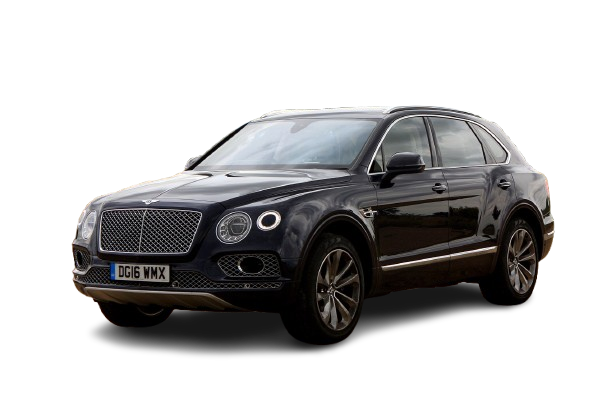
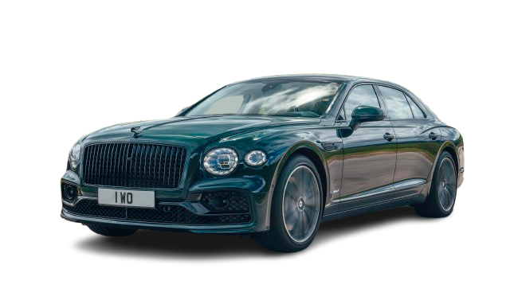

Bentley
Historia de la marca
Bentley es una marca británica de automóviles de lujo fundada en 1919. Es conocida por fabricar coches de alta gama que combinan lujo, potencia y artesanía. A lo largo de su historia, ha destacado tanto en carretera como en competiciones.
Fundador
La empresa fue fundada por Walter Owen Bentley (W.O. Bentley), un ingeniero apasionado por la velocidad y la innovación, que buscaba crear coches rápidos y resistentes.
Primer coche
El primer modelo fue el Bentley 3 Litre, presentado en 1919. Este coche destacó por su rendimiento y fiabilidad, logrando éxitos en competiciones como las 24 Horas de Le Mans.
Datos importantes
- Fundación: 1919
- País: Reino Unido
- Empresa matriz: Grupo Volkswagen
- Especialidad: Coches de lujo y alto rendimiento
Modelos famosos
- Bentley Continental GT
- Bentley Bentayga
- Bentley Flying Spur

